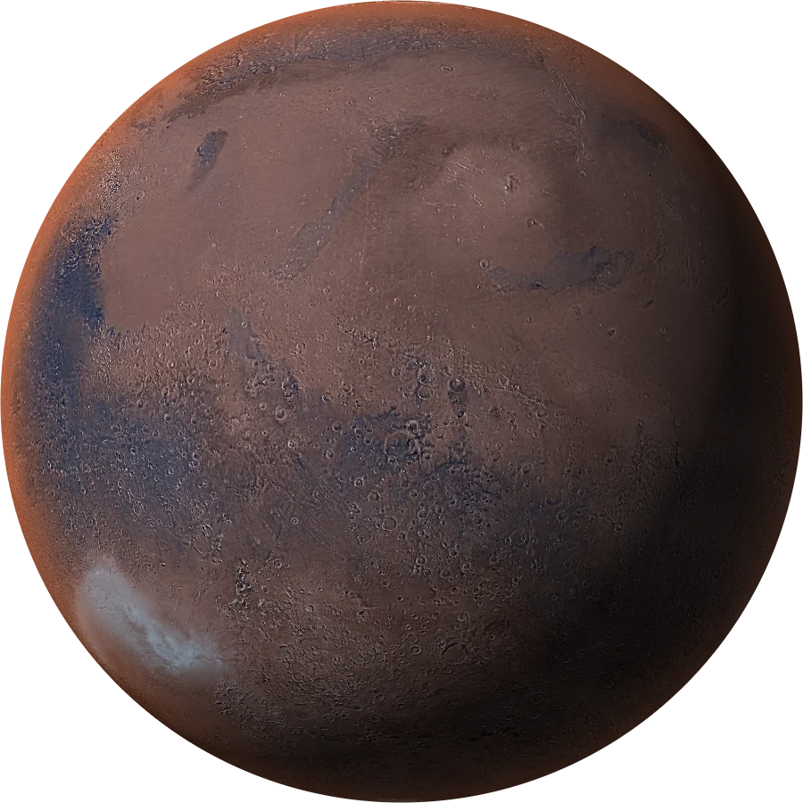
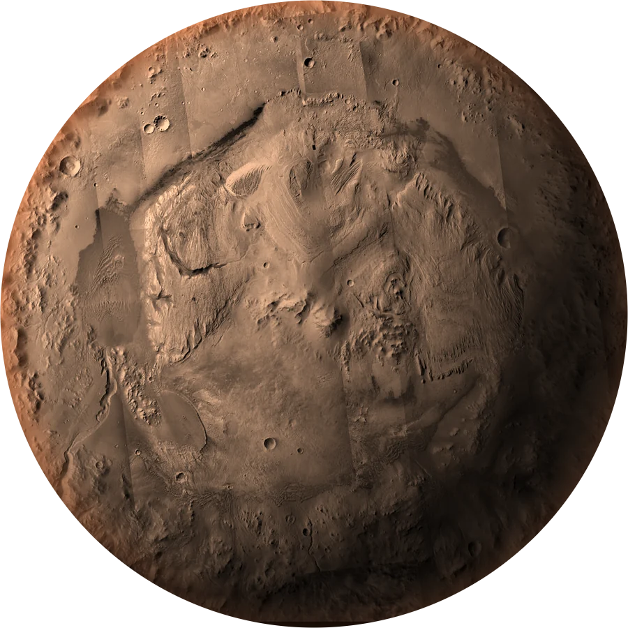
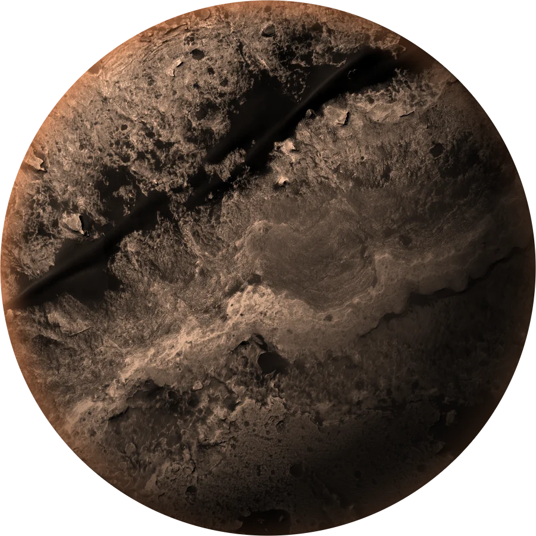
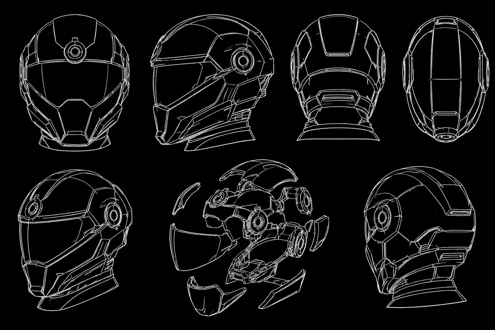

MARS
Planète rouge
La carte qui vous ramène à la base.
Images réelles : NASA/JPL/USGS · Viking, MRO CTX, MRO HiRISE
Une sortie. Un site.
Au pied du mont Sharp.
La zone de sortie couvre 4,7 × 3,5 km entre les dunes Bagnold et la crête Vera Rubin, sur la route du rover Curiosity dans le cratère Gale.
- Équipage
- 2 astronautes à pied
- Durée
- 4 h de sortie
- Vitesse
- 2 km/h en combinaison
- Pente max.
- 20°
Hypothèses de l'équipe à valider, pas des chiffres NASA.
Douze ans de mesures
au sol de Gale.
Les conditions de sortie d'ARES NAV viennent des instruments de Curiosity, sur place depuis 2012.
- REMSStation météo
Température, pression, vent et UV : les conditions types du panneau Sécurité.
- RADRadiations
La dose reçue en surface, environ 0,64 mSv par jour.
- MastcamCaméras couleur
Les vues au sol de chaque arrêt : « ce que vous verrez ».
- ChemCamLaser et spectromètre
La composition des roches jusqu'à 7 m : des cibles pour l'IA.
- NavcamCaméras de navigation
Le rover choisit lui-même son trajet en évitant les dangers. ARES NAV applique la même idée aux astronautes.
- Sur Mars depuis
- 2012
- Masse
- 899 kg
- Longueur
- 3 m
- Instruments
- 10
Chargement du modèle 3D NASA…
Modèle 3D : NASA/JPL-Caltech · glissez pour le faire tourner
7 problèmes sur le terrain.
7 réponses dans ARES NAV.
Pas de GPS, une Terre trop loin pour aider, des dangers invisibles et quatre heures d'oxygène. ARES NAV répond à chacun.
- 01
Problème
Aucun GPS
Aucun satellite de navigation ne tourne autour de Mars.
0 satelliteSolutionSe repérer sur les images d'orbite
La carte s'appuie sur les images HiRISE à 30 cm par pixel ; la position est suivie le long du trajet prévu.
MRO · HiRISE - 02
Problème
Des cartes trop larges
Les outils actuels montrent des régions entières, pas une sortie de quelques kilomètres.
154 km → 5 kmSolutionUne carte à l'échelle de la marche
Image, relief, thermique et minéraux superposés sur la zone de sortie de 4,7 × 3,5 km.
4 missions NASA - 03
Problème
Des dangers invisibles
Dunes où l'on s'enfonce, pentes raides, champs de rochers : rien n'est signalé.
Zones à risqueSolutionL'IA détecte les dangers
Un modèle classe chaque parcelle de 20 m en cinq types de terrain et signale les dangers avec un indice de confiance.
IA · apprentissage non supervisé - 04
Problème
De l'oxygène compté
Une sortie de quatre heures ne pardonne aucune erreur de durée.
4 h d'autonomieSolutionLe trajet le plus sûr, minuté
Le calcul contourne les dangers ; durée, marge et heure limite de retour sont recalculées à chaque arrêt ajouté.
Calcul A* · ARES NAV - 05
Problème
La Terre trop loin
Un message met de 3 à 22 minutes pour arriver : pas d'aide en direct.
3 à 22 minSolutionUn assistant IA à bord
Il répond à l'équipage à partir des données chargées, cite ses sources et fonctionne sans connexion.
Assistant ARES - 06
Problème
Une attention limitée
En combinaison, les mains occupées, impossible de lire une carte chargée.
Mains occupéesSolutionUn affichage casque épuré
Flèche, distance, oxygène, alerte. Rien d'autre.
Mode casque - 07
Problème
Où chercher la vie ?
Les traces d'eau ancienne sont dispersées et invisibles à l'œil nu.
≈ 3,6 milliards d'annéesSolutionL'IA propose des cibles
Elle croise minéraux et types de roche pour classer les endroits où chercher des traces de vie passée.
IA · MRO CRISM
Une IA qui lit le terrain.
Et cherche la vie.
Les données de six instruments entrent d'un côté. De l'autre sortent les dangers, les cibles scientifiques, le trajet et le briefing.
Image HiRISEVue de l'IA
Le classement du terrain est un vrai modèle d'apprentissage non supervisé (k-moyennes) entraîné sur la zone : luminosité et texture HiRISE, pente du modèle de terrain. Le potentiel de vie est un score simulé qui pondère minéraux et types de roche.
Quatre missions NASA.
Un seul endroit.
Image, relief, thermique, minéraux, puis la lecture de l'IA et le trajet : chaque couche répond à une question de l'équipage.
Le trajet le plus sûr.
Pas le plus court.
L'équipage choisit ses arrêts. ARES NAV les relie sur le vrai terrain en évitant les dangers détectés par l'IA, puis calcule la durée, la marge d'oxygène et l'heure limite de retour.
Bilan
de sortie
Le casque ARES

A B C D E- ACapteur frontal
Caméra stéréo et lidar : l'IA voit le terrain devant l'astronaute et repère les obstacles en temps réel.
- BModules latéraux
Centrale inertielle et caméras : la position est suivie sans GPS, recalée sur les images d'orbite.
- CVisière tête haute
Le trajet sûr, les dangers et les cibles s'affichent sur le terrain réel, en réalité augmentée.
- DUnité arrière
Ventilation, recyclage du CO₂ et réserve d'énergie, surveillés en continu.
- EModule central
Calculateur de bord du copilote IA : détection, trajet et réponses sans connexion à la Terre.
- Répond seulement à partir des faits fournis.
- Oxygène, durée et dose viennent du code, jamais du modèle.
- Chaque réponse cite la mission et l'instrument.
- Sans connexion : briefing et explications préparés à l'avance.
6types de données
4missions NASA
1modèle d'IA du terrain
| Type | Mission · instrument | Ce que ça apporte | Usage |
|---|---|---|---|
| Optique | Mars Reconnaissance Orbiter · HiRISE, CTX | Image détaillée du sol, entrée de l'IA | Vue satellite, IA |
| Topographie | Mars Global Surveyor · MOLA ; terrain HiRISE | Altitude et pentes, base de l'itinéraire | Vue relief, IA |
| Thermique | Mars Odyssey · THEMIS | Sable meuble ou roche dure | Vue thermique |
| Spectral | Mars Reconnaissance Orbiter · CRISM | Minéraux formés avec de l'eau | Potentiel de vie |
| Atmosphère | Curiosity · REMS | Température, pression, vent, UV au sol | Sécurité |
| Radiation | Curiosity · RAD | Dose reçue en surface | Sécurité |
Tuiles et modèle de terrain : NASA Mars Trek. Modèle 3D : NASA/JPL-Caltech. Tout est embarqué : la carte fonctionne sans connexion.